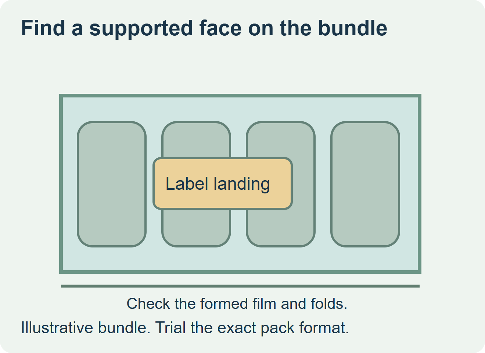
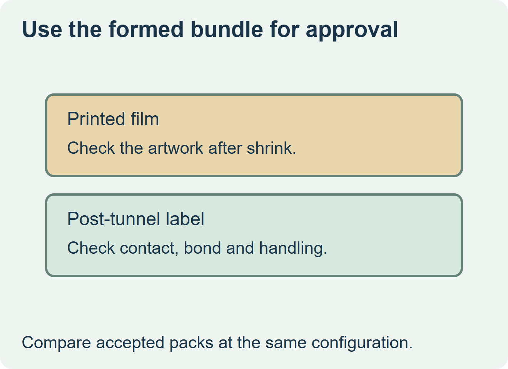

Evaluate a separate label after shrinking when the film already forms a stable landing and the information changes by run or destination. Compare printed shrink film when the design needs broad coverage or there is no repeatable downstream landing. Approve the actual finished bundle in either route.


Draw the useful area after the tunnel
Mark wrinkles, overlap, loose spans between containers and the handles or openings used to carry the bundle. A flat film proof can show the intended artwork, but the finished bundle shows where the design and label can sit. Quantum Packaging describes clear and printed films for beverage bundling. Videojet describes direct marking and label application solutions for shrink wrap. Use these examples to ask the bundler and applicator suppliers what they support. Quantum Packaging’s beverage film overview and Videojet shrink-wrap marking and labeling
| Proposal | Specimen to compare | Order decision |
|---|---|---|
| Printed shrink film | Printed and shrunk bundle at the real pack configuration | Approve artwork position and appearance after forming. |
| Separate label after shrinking | Label on the actual supported landing at the proposed station | Approve application, bond and readability through the handling route. |
| Current film has no stable landing | Revised film layout, landing or supported alternative | Hold the separate label release until the revised bundle passes the same trial. |


Match the label proof to the downstream station
Observe the film condition where the label would be applied, including surface temperature, folds and contact support. Try the actual label footprint and construction. Inspect the same specimen after cooling and routine lifting, case packing or transport handling. For a hypothetical mixed-flavor bundle, the same clear film could remain in use with a variable outside label if the line can place it on a consistent supported area. Compare that option with a printed film quote for the same accepted bundle count.
Discuss the unresolved label requirement
Send photos of the wrapped bundle at the intended application station, the film and pack dimensions, where the label can land, handling and storage conditions, print field and quantity by pack configuration. Review beverage label options and prepare a label specification inquiry. The contact page opens an email draft and lists email or WhatsApp for attachments. Supply, proof options, testing, pricing and timing require project confirmation.